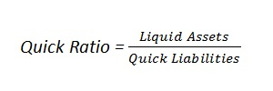
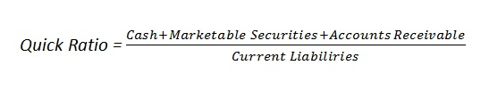

In finance, the quick ratio, also known as the acid-test ratio is a type of liquidity ratio which measures the ability of a company to use its near cash or quick assets to extinguish or retire its current liabilities immediately. Quick assets include those current assets that presumably can be quickly converted to cash at close to their book values. It is the ratio between quickly available or liquid assets and current liabilities, and is expressed as follows:
and:
Examples (choose from the list or add a new one):
{% if form %} {% else %}| Year | Cash | Marketable securities | Accounts receivable | Current liabilities | Quick ratio |
| {{ cr.year }} | {{ cr.cash }} | {{ cr.marketable_securities }} | {{ cr.accounts_receivable }} | {{ cr.current_liabilities }} | {{ cr.quick_ratio }} |